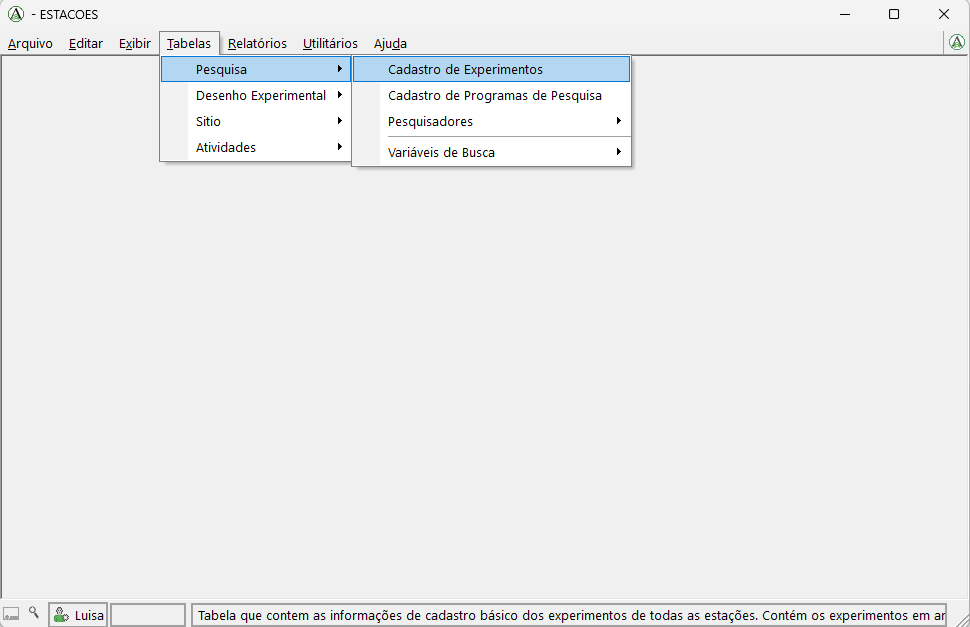
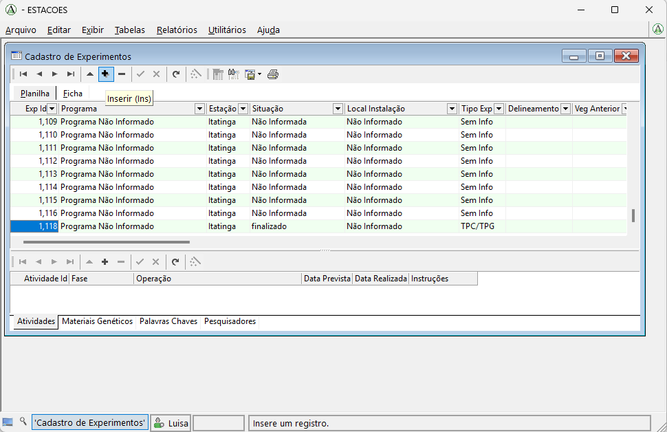
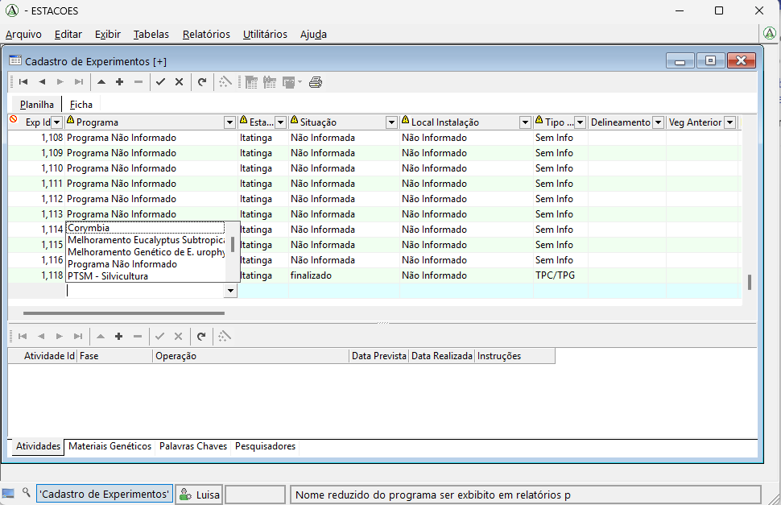
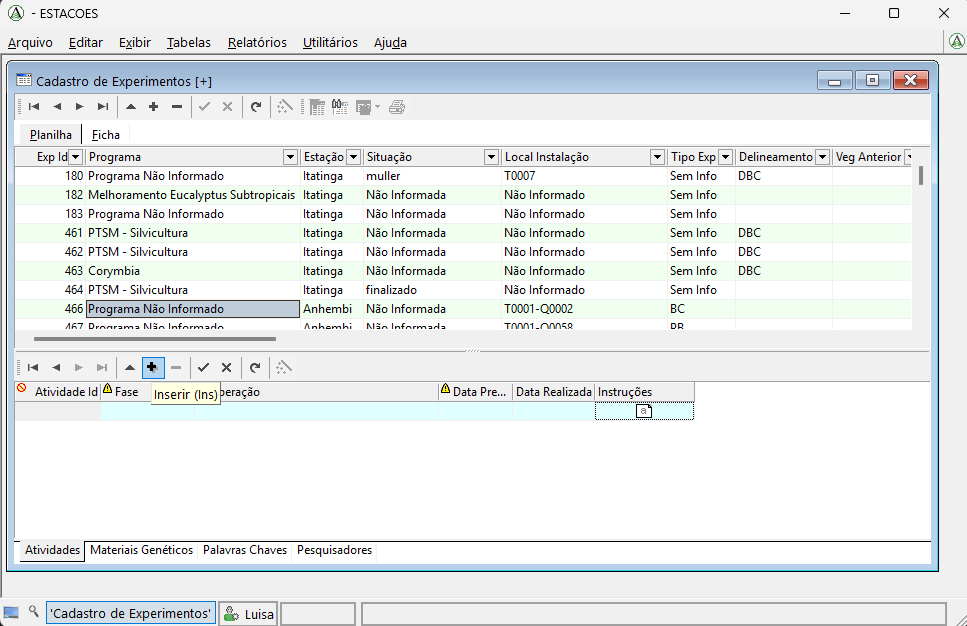
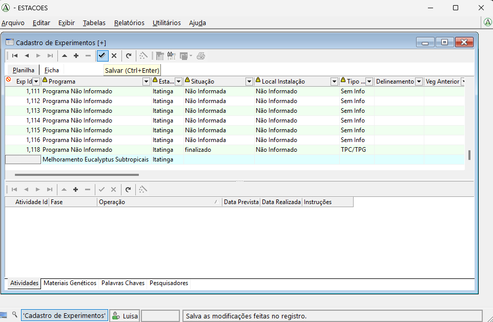
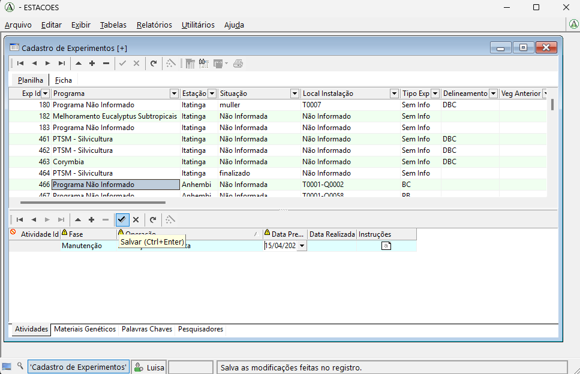
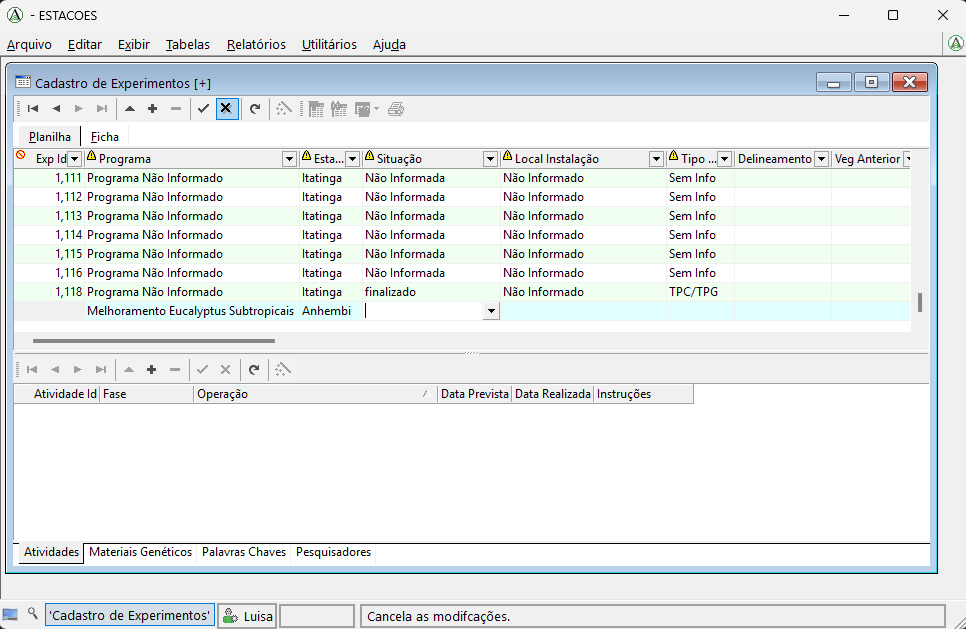
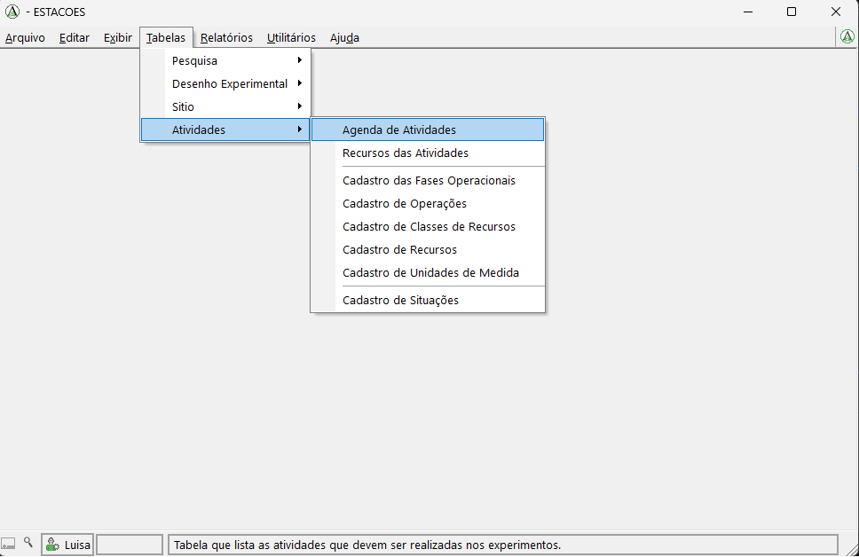
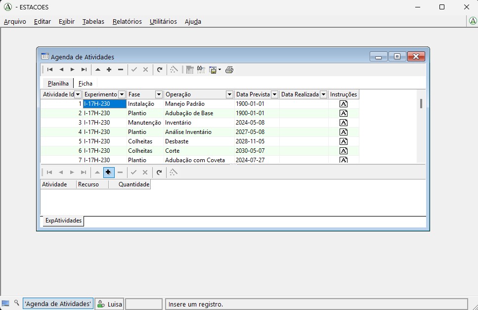

Cadastro de Experimento
Nesta página apresentamos o passo a passo para cadastrar um novo experimento no banco de dados de experimentos da USP usando o Argow.
Passo a passo
1. Abrir a tela de cadastro de experimentos
No menu superior do Argow, clique em Tabelas, depois em Pesquisa e, em seguida, em Cadastro de Experimentos.

Esse caminho abre a tabela em que o novo experimento será cadastrado.
2. Criar um novo cadastro
Ao clicar em Cadastro de Experimentos, sera aberta a tabela em que todos os experimentos ja cadastrados estao listados.
Para adicionar um novo experimento, clique no botao com o simbolo de +, localizado na parte superior esquerda da tabela.

3. Preencher os dados do experimento
Ao clicar no botao +, uma nova linha em branco sera criada na tabela para o preenchimento do novo experimento.
A coluna Exp Id não deve ser preenchida, pois esse identificador sera gerado automaticamente pelo sistema.
As demais colunas devem ser preenchidas de acordo com as informacoes do experimento:
- Quando o campo for categorico, sera exibida uma lista para selecao.
- Quando o campo for numerico, o valor deve ser digitado diretamente.
- Quando o campo for de imagem, como na coluna Croqui, clique na setinha da celula, escolha a opcao Opcoes e selecione a imagem que sera carregada.
Na coluna Programa, por exemplo, o preenchimento e feito por meio de uma lista de opcoes.

💡 Dica
Se a opcao desejada nao aparecer na lista de um campo categorico, e possivel adicionar novas opcoes.
Esse procedimento sera mostrado no tutorial Complementar Caracteristicas
4. Preencher as tabelas complementares do experimento
Depois de adicionar as informacoes do experimento na tabela principal, e necessario preencher tambem as quatro tabelas que aparecem abaixo.
Essas tabelas guardam informacoes associadas ao experimento, mas que podem ter mais de um registro para o mesmo experimento:
- Atividades
- Materiais Geneticos
- Palavras Chaves
- Pesquisadores
Por exemplo, um mesmo experimento pode ter mais de uma atividade. Nesse caso, deve ser adicionada uma linha na tabela Atividades para cada atividade cadastrada.
Para inserir uma nova linha, primeiro selecione a aba da tabela desejada. Em seguida, clique no botao com o simbolo de +, localizado acima da tabela.

5. Salvar as informacoes inseridas
Depois de preencher os dados em cada tabela, e necessario salvar as informacoes.
Para isso, clique no botao com o simbolo de check, localizado acima da tabela correspondente.
Na tabela principal de cadastro do experimento, o botao de salvamento aparece na parte superior da tabela:

Nas tabelas complementares, como Atividades, Materiais Geneticos, Palavras Chaves e Pesquisadores, o salvamento tambem e feito pelo botao de check acima da tabela selecionada:

Se for necessario cancelar o que foi preenchido ou excluir a insercao feita, clique no botao X.

6. Abrir a Agenda de Atividades
Depois de cadastrar o experimento e suas informacoes basicas, o proximo passo e adicionar os recursos necessarios para cada atividade.
Para isso, no menu principal, clique em Tabelas, depois em Atividades e, em seguida, em Agenda de Atividades.
Esse caminho abre a tabela que mostra as atividades de todos os experimentos cadastrados.

7. Adicionar os recursos de cada atividade
Na tabela Agenda de Atividades sao exibidas as atividades de todos os experimentos cadastrados.
Para adicionar os recursos, primeiro clique na linha que corresponde ao experimento e a atividade desejados. Em seguida, na tabela inferior, adicione os recursos relacionados a essa atividade.
Lembre-se de que uma mesma atividade pode ter mais de um recurso. Portanto, se necessario, adicione uma linha para cada recurso.
Para inserir um novo recurso, clique no botao com o simbolo de +. Ao finalizar o preenchimento, clique no botao de check para salvar.

Dica
Se o recurso que voce deseja adicionar nao estiver listado, e possivel inclui-lo na lista de recursos.
Esse procedimento sera mostrado em um tutorial especifico.
Video do procedimento
O video demonstrando todo o processo de cadastro sera adicionado ao final desta pagina.